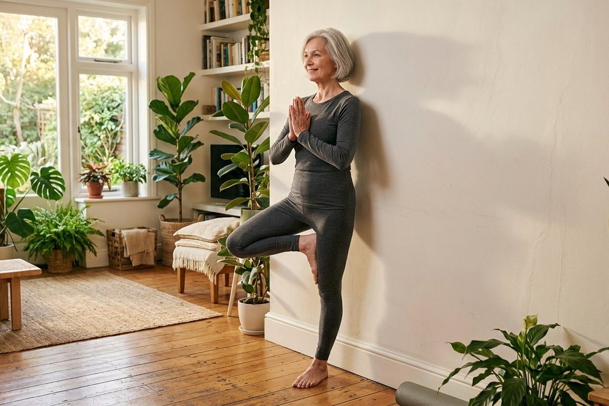

Why Strength Training After 50 Is Not Optional
Muscle loss is not inevitable — but it is silent until it isn't.

Sarcopenia — age-related muscle loss — begins around 30 and runs at roughly 3–8% of muscle mass per decade, accelerating sharply after 60. It is silent for a long time. You do not notice the first two kilos. You notice the fourth when carrying shopping up stairs becomes something you plan around.
The reason this matters more than the aesthetic conversation is what muscle is for at 70: standing up from a chair, catching yourself when you trip, carrying a grandchild, recovering from surgery, surviving a hospital stay. Muscle and strength are the raw material of independence.
What the evidence actually shows
Resistance training in older adults reliably increases muscle mass, strength and functional capacity. The research is remarkably consistent: trials in people in their 60s, 70s and even 90s show strength gains of 20–100% over 8–12 weeks, alongside improvements in balance, gait speed and the ability to perform daily tasks.
It also loads bone. Bone responds to mechanical stress like any other tissue, and loading is one of very few things that reliably slows bone mineral density loss. Combined with adequate calcium and vitamin D, resistance training is a core part of osteoporosis management — supervised, and with appropriate modifications.
The four movements that matter
- A squat pattern — sit-to-stand from a chair, progressing to a goblet squat.
- A hinge pattern — a hip hinge, then a light deadlift or kettlebell hinge.
- A push and a pull — a wall push-up and a band row are enough to start.
- Balance and single-leg work — standing on one foot, calf raises, heel-to-toe walking.
Two sessions a week covering these will do more for your independence than any other training decision you make this decade. Two is genuinely enough. The mistake is not doing too little; it is doing one enthusiastic session, being wrecked for a week, and stopping.
Protein is part of the programme
Muscle protein synthesis becomes less responsive to food with age — sometimes called anabolic resistance. Most older adults benefit from roughly 1.2–1.6 g of protein per kg of bodyweight daily, spread across meals rather than piled into dinner. Training without adequate protein is like building without bricks.
Common fears, answered honestly
"I will hurt myself"
"I'm too old to build muscle"
"I have arthritis / a bad back / a replaced hip"
How to start this week
Two sessions, non-consecutive days, twenty minutes each. Sit-to-stand, hip hinge, wall push-up, band row, single-leg balance. Two sets of 8–10, lowering slowly over three seconds. Add a cushion to the chair if a full sit-to-stand is hard. Write it down. Do that for four weeks before adding anything.
Then keep going for thirty years. That is the whole intervention, and it is one of the highest-return things anyone can do with twenty minutes and a chair.
Filed under
Keep reading

How to Start Working Out Again (Without Quitting in Week Three)
Most people who restart exercise quit within a month, and it is rarely a willpower problem. Here is the evidence-based way to structure the first eight weeks so that week five is easier than week one.
Your First Week at the Gym: A Survival Guide
The gym is not complicated, it is just unfamiliar. A practical guide to your first week: what to bring, how to structure a session, and the unwritten rules that make you look like you belong.